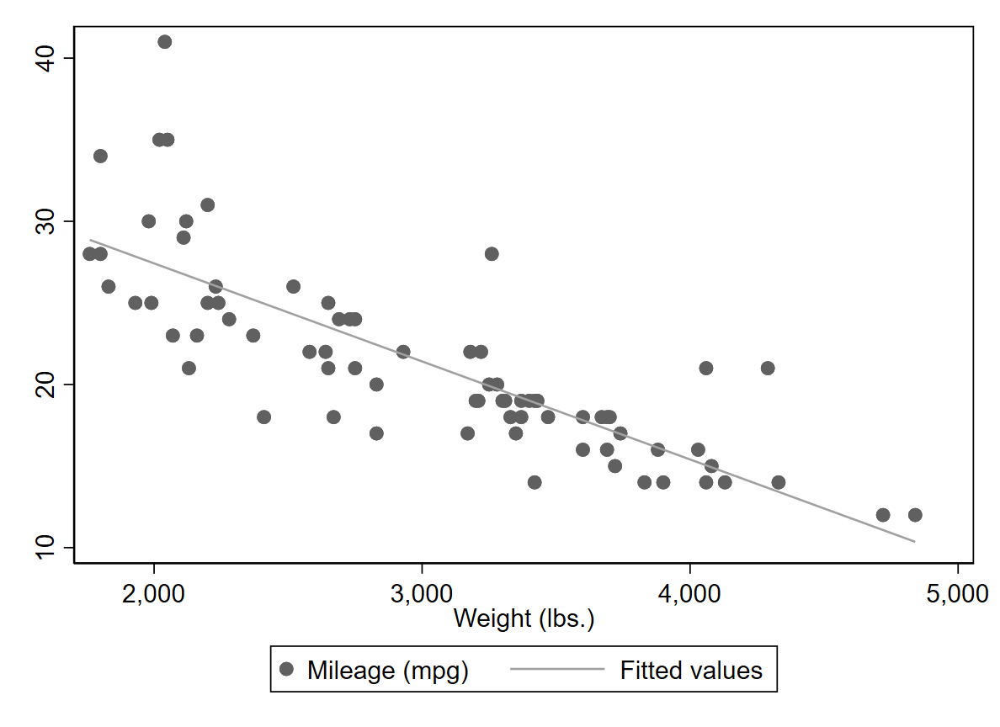
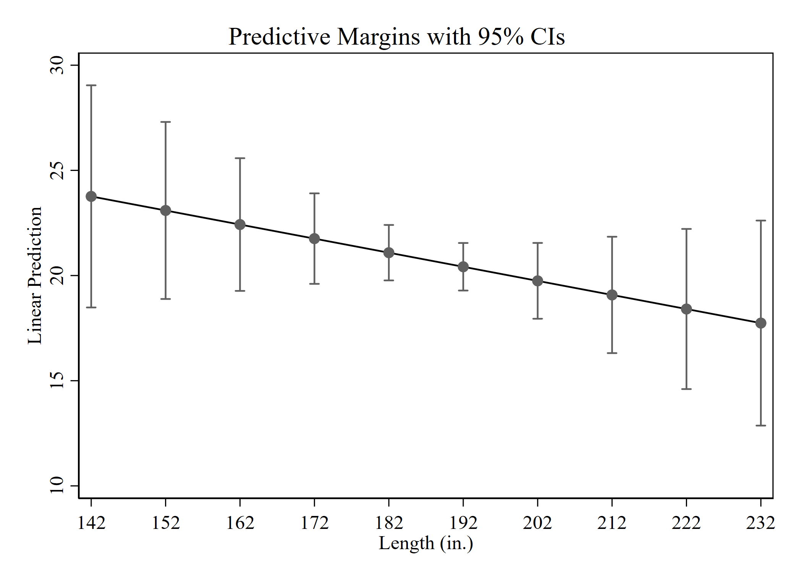

Chapter 5 Linear Regression
5.1 regress
- Hat das Gewicht eines Autos (weight) einen Einfluss auf den Verbrauch/Reichweite (mpg miles pro galion) des Autos?
- Mit regress Y X berechnest du den Einfluss einer metrischen oder binären Dummy Variable X auf eine metrischen Zielvariable Y
sysuse auto, clear
regress mpg weight Running C:\Users\gu99mywo\Dropbox\Lehre\NotShared_FAU\EMS\Stata_Paste_BD\pro> e.do ...
(1978 Automobile Data)
Source | SS df MS Number of obs = 74
-------------+---------------------------------- F(1, 72) = 134.62
Model | 1591.9902 1 1591.9902 Prob > F = 0.0000
Residual | 851.469256 72 11.8259619 R-squared = 0.6515
-------------+---------------------------------- Adj R-squared = 0.6467
Total | 2443.45946 73 33.4720474 Root MSE = 3.4389
------------------------------------------------------------------------------
mpg | Coef. Std. Err. t P>|t| [95% Conf. Interval]
-------------+----------------------------------------------------------------
weight | -.0060087 .0005179 -11.60 0.000 -.0070411 -.0049763
_cons | 39.44028 1.614003 24.44 0.000 36.22283 42.65774
------------------------------------------------------------------------------Interpretation: Erhöht sich das Gewicht eines Autos um eine Einheit, dann verringert sich die Reichweite im Durchschnitt um -.006 Einheiten (Miles pro galion). Der Effekt ist statistisch signifikant.
- By the way. Inwiefern die Modellannahmen gegeben sind, wurden bei keinem der hier aufgeführten Beispiele geprüft. Das ist Dein Job 😌! Beispielsweise sollte man prüfen, inwiefern überhaupt von einem linearen Zusammenhang ausgegangen werden kann. Im Scatter ist dies meistens gut sichtbar:
twoway scatter mpg weight || lfit mpg weight
- Aber falls es doch nicht so eindeutig ist, hier ein paar andere Beispiele zu Vergleichszwecken 😉

{kind=link}
5.2 Vorhersagen per Hand
- Wie hoch fällt die vorhergesagte Laufleistung bei einem durchschnittlichen Gewicht von 3019 Pfund aus?
- coeflegend zeigt Dir, wie die Terme der Regression heißen
quietly regress mpg weight
regress, coeflegendRunning C:\Users\gu99mywo\Dropbox\Lehre\NotShared_FAU\EMS\Stata_Paste_BD\pro> e.do ...
Source | SS df MS Number of obs = 74
-------------+---------------------------------- F(1, 72) = 134.62
Model | 1591.9902 1 1591.9902 Prob > F = 0.0000
Residual | 851.469256 72 11.8259619 R-squared = 0.6515
-------------+---------------------------------- Adj R-squared = 0.6467
Total | 2443.45946 73 33.4720474 Root MSE = 3.4389
------------------------------------------------------------------------------
mpg | Coef. Legend
-------------+----------------------------------------------------------------
weight | -.0060087 _b[weight]
_cons | 39.44028 _b[_cons]
------------------------------------------------------------------------------- Mit display können wir dann eine Vorhersage per Hand berechnen:
display _b[_cons] + _b[weight] * 3019Running C:\Users\gu99mywo\Dropbox\Lehre\NotShared_FAU\EMS\Stata_Paste_BD\pro> e.do ...
21.3000585.3 esttab
- esttab ist ein ado und kann für den Modellvergleich genutzt werden, nachdem das Ado installiert wurde
- Hierfür müssen wir die Modelle mit estimates store zuvor speichern
- Der Befehl quietly unterdrückt den Output der eigentlichen Regressionstabelle
- esttab kann dann genutzt werden, um die Modelle miteinander zu vergleichen
quietly regress mpg weight
estimates store model1
quietly regress mpg weight headroom trunk length turn
estimates store model2
esttab model1 model2Running C:\Users\gu99mywo\Dropbox\Lehre\NotShared_FAU\EMS\Stata_Paste_BD\pro> e.do ...
--------------------------------------------
(1) (2)
mpg mpg
--------------------------------------------
weight -0.00601*** -0.00375*
(-11.60) (-2.24)
headroom 0.0121
(0.02)
trunk -0.0367
(-0.23)
length -0.0675
(-1.05)
turn -0.0627
(-0.33)
_cons 39.44*** 48.25***
(24.44) (6.81)
--------------------------------------------
N 74 74
--------------------------------------------
t statistics in parentheses
* p<0.05, ** p<0.01, *** p<0.0015.4 coefplot
- Nutze coefplot zur Visualisierung von Regressionsergebnisse. Coefplot plottet die Koeffizienten der Regression
- Mehr Infos zu Coefplot?
5.5 Interaktionen (##)
- Interaktionsterme werden durch ## ausgegeben und Visualisierrung der Interaktionen erhällt man durch den margins Befehl
- Im nächsten Output: Interaktion zweier metrischer (
c.) Variablen: - Ferner muss bei metrischen Variablen die Range der Vorhersage angeben werden. Hier:
length=(142(10)233)bestimmt die Range der vorhergesagten Werte, mit dem Minimum (142), dem Maximum (233) und sinnvolle Zwischenschritte, die zuvor für dielengthVariable berechnet wurden
regress mpg c.weight##c.length
quietly margins, at(length=(142(10)233))
marginsplot
Interpretation: Die Interaktion dieser beiden Variablen ist nicht signifikant, die Konfidenzintervalle überlappen sich deutlich.
- Alternativ: Bei Interaktionen zwei binärer
(i)Variablen:
regress Y i.X##Z
margins i.X##i.Z
marginsplot5.6 Log Modelle: Lin-Log
- UV wird logarithmiert
gen ln_weight = ln(weight)
regress mpg ln_weight Running C:\Users\gu99mywo\Dropbox\Lehre\NotShared_FAU\EMS\Stata_Paste_BD\pro> e.do ...
Source | SS df MS Number of obs = 74
-------------+---------------------------------- F(1, 72) = 147.33
Model | 1641.35428 1 1641.35428 Prob > F = 0.0000
Residual | 802.105178 72 11.1403497 R-squared = 0.6717
-------------+---------------------------------- Adj R-squared = 0.6672
Total | 2443.45946 73 33.4720474 Root MSE = 3.3377
------------------------------------------------------------------------------
mpg | Coef. Std. Err. t P>|t| [95% Conf. Interval]
-------------+----------------------------------------------------------------
ln_weight | -17.80317 1.466715 -12.14 0.000 -20.72702 -14.87933
_cons | 163.3444 11.70898 13.95 0.000 140.003 186.6858
------------------------------------------------------------------------------Interpretation: Mit einem Anstieg des Gewichts um 1 Prozent reduziert sich die durchschnittliche Reichweite um -.178 (beta/100) Einheiten.
5.7 Log-Lin
- AV wird logarithmiert
gen ln_mpg = ln(mpg)
regress ln_mpg weight Running C:\Users\gu99mywo\Dropbox\Lehre\NotShared_FAU\EMS\Stata_Paste_BD\pro> e.do ...
Source | SS df MS Number of obs = 74
-------------+---------------------------------- F(1, 72) = 179.26
Model | 3.52530845 1 3.52530845 Prob > F = 0.0000
Residual | 1.4159149 72 .019665485 R-squared = 0.7134
-------------+---------------------------------- Adj R-squared = 0.7095
Total | 4.94122335 73 .067687991 Root MSE = .14023
------------------------------------------------------------------------------
ln_mpg | Coef. Std. Err. t P>|t| [95% Conf. Interval]
-------------+----------------------------------------------------------------
weight | -.0002828 .0000211 -13.39 0.000 -.0003249 -.0002407
_cons | 3.878298 .0658171 58.93 0.000 3.747094 4.009502
------------------------------------------------------------------------------Interpretation: Erhört sich das Gewicht um eine Einheit, so reduziert sich die Reichweite im Durchschnitt approximativ um 0,02 %.
5.8 Log-Log
- UV und AV sind logarithmiert
regress ln_mpg ln_weight Running C:\Users\gu99mywo\Dropbox\Lehre\NotShared_FAU\EMS\Stata_Paste_BD\pro> e.do ...
Source | SS df MS Number of obs = 74
-------------+---------------------------------- F(1, 72) = 179.41
Model | 3.52612925 1 3.52612925 Prob > F = 0.0000
Residual | 1.4150941 72 .019654085 R-squared = 0.7136
-------------+---------------------------------- Adj R-squared = 0.7096
Total | 4.94122335 73 .067687991 Root MSE = .14019
------------------------------------------------------------------------------
ln_mpg | Coef. Std. Err. t P>|t| [95% Conf. Interval]
-------------+----------------------------------------------------------------
ln_weight | -.8251737 .061606 -13.39 0.000 -.9479829 -.7023645
_cons | 9.608391 .4918087 19.54 0.000 8.627989 10.58879
------------------------------------------------------------------------------Interpretation: Erhöht sich das Gewicht um 1 %, reduziert sich die Reichweite im Durchschnitt um 8,2 %.
5.9 Optionen: robust
- Robuste Standardfehler erhällt man durch die Option
vce(robust)
regress mpg weight, vce(robust)Running C:\Users\gu99mywo\Dropbox\Lehre\NotShared_FAU\EMS\Stata_Paste_BD\pro> e.do ...
Linear regression Number of obs = 74
F(1, 72) = 105.83
Prob > F = 0.0000
R-squared = 0.6515
Root MSE = 3.4389
------------------------------------------------------------------------------
| Robust
mpg | Coef. Std. Err. t P>|t| [95% Conf. Interval]
-------------+----------------------------------------------------------------
weight | -.0060087 .0005841 -10.29 0.000 -.007173 -.0048443
_cons | 39.44028 1.98832 19.84 0.000 35.47664 43.40393
------------------------------------------------------------------------------5.10 e(sample)
- e(sample) markiert, welche Fälle in der Analyse berücksichtigt wurden, so kann die Fallzahl beim Vergleich mehrerer Modelle “konstant” gehalten werden
- Hierfür wird zuerst das umfangreichere Modell gerechnet, da jede weitere Variable im Model die Anzahl an Missing erhöhen kann. Danach wird eine Variable mit dem Namen
samplegeneriert die anzeigt, welche Fälle berücksichtigt wurden - Auf Basis dieser Variable können dann die “kleineren” Modelle mit Hilfe des if berechnet werden
quietly regress mpg weight headroom trunk length turn
gen sample = 1 if e(sample)
quietly regress mpg weight if sample == 1
quietly regress mpg weight headroom trunk length turn if sample == 1 Running C:\Users\gu99mywo\Dropbox\Lehre\NotShared_FAU\EMS\Stata_Paste_BD\pro> e.do ...
5.11 ereturn list
- ereturn list zeigt, welche Terme Stata bei der Regression berechnet hat und wie die einzelnen Terme intern heißen
ereturn listRunning C:\Users\gu99mywo\Dropbox\Lehre\NotShared_FAU\EMS\Stata_Paste_BD\pro> e.do ...
scalars:
e(N) = 74
e(df_m) = 5
e(df_r) = 68
e(F) = 26.66054023704533
e(r2) = .6622002606043995
e(rmse) = 3.4839969622233
e(mss) = 1618.059490830339
e(rss) = 825.3999686291203
e(r2_a) = .63736204447237
e(ll) = -194.2381619431207
e(ll_0) = -234.3943376482347
e(rank) = 6
macros:
e(cmdline) : "regress mpg weight headroom trunk length turn if .."
e(title) : "Linear regression"
e(marginsok) : "XB default"
e(vce) : "ols"
e(depvar) : "mpg"
e(cmd) : "regress"
e(properties) : "b V"
e(predict) : "regres_p"
e(model) : "ols"
e(estat_cmd) : "regress_estat"
matrices:
e(b) : 1 x 6
e(V) : 6 x 6
functions:
e(sample)